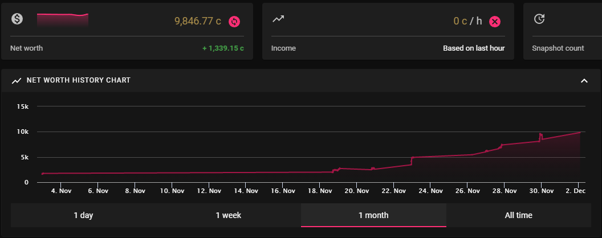

Exilence Next
Exilence Next is an app that lets you track your income and net worth in Path of Exile based off the items in your stash.
Exilence Next
Download and install the latest stable version of the program from the developer’s github page.
The program has an account integration function to get started quickly.

Log into your Path of Exile account and Authorize Exilence access to view your stashes and items.
Exilence is Always Useful
Newer players will find Exilence’s break down of individual currency conversions helpful in understanding the combined value of smaller currencies.
Exilence tracks and provides a chaos orb value for the selected stash tabs at regular intervals.
Having a visual representation of wealth is one reason many players enjoy Path of Exile.

Once you begin currency making strategies, the currency per hour function helps track efficiency.